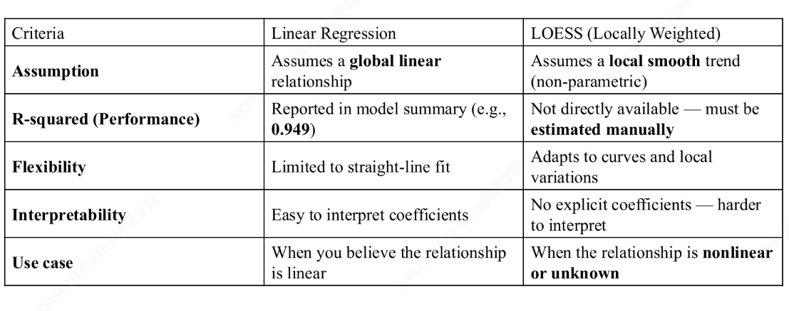

Lecture 6
1. 回归分析进阶
1.1. Influential Data Points
影响点（Influential Points） 是对回归模型有不成比例影响的数据点，需要特别关注。
Cook's Distance（库克距离）
库克距离衡量删除某个数据点后，回归模型预测值的变化程度。它综合考虑了 杠杆值（leverage） 和 残差（residual）：
\[
D_i = \frac{\sum_{j=1}^{n}(\hat{y}_j - \hat{y}_{j(i)})^2}{p \cdot MSE}
\]
其中 \(\hat{y}_{j(i)}\) 是删除第 \(i\) 个数据点后的预测值，\(p\) 是特征数量。
库克距离的经验阈值
- \(D_i > 1\)：通常认为是影响点
- \(D_i > \frac{4}{n}\)：需要关注的数据点（\(n\) 为样本量）
| Python |
|---|
| import statsmodels.api as sm
import numpy as np
X = sm.add_constant(X) # 添加截距项
model = sm.OLS(y, X).fit()
# 获取 Cook's Distance
influence = model.get_influence()
cooks_d = influence.cooks_distance[0]
# 标记影响点
influential = np.where(cooks_d > 4 / len(X))[0]
print(f"影响点索引: {influential}")
print(f"对应 Cook's D: {cooks_d[influential]}")
|
Dummy Variable（虚拟变量）
虚拟变量将分类变量转换为数值变量，使回归模型能够处理分类特征。对于 \(k\) 个类别，需要 \(k-1\) 个虚拟变量（避免虚拟变量陷阱，即完全多重共线性）。
| Python |
|---|
| import pandas as pd
# 假设 color 列有 red, green, blue 三个类别
df_encoded = pd.get_dummies(df, columns=['color'], drop_first=True)
# drop_first=True 删除第一个类别，避免完全共线性
# 结果：color_green, color_blue（red 作为基准类别）
|
1.2. Non-Parametric Linear Regression
非参数线性回归 不假设数据的函数形式，通过局部拟合来捕捉数据中的非线性关系。
LOWESS / LOESS
LOWESS（Locally Weighted Scatterplot Smoothing） 和 LOESS（Locally Estimated Scatterplot Smoothing） 是常用的非参数回归方法，核心思想是：对每个预测点，只用其邻近的数据点进行加权最小二乘拟合。
| Python |
|---|
| import statsmodels.api as sm
import matplotlib.pyplot as plt
# LOWESS 平滑
lowess_result = sm.nonparametric.lowess(y, x, frac=0.3) # frac 控制平滑程度
plt.scatter(x, y, alpha=0.5, label='原始数据')
plt.plot(lowess_result[:, 0], lowess_result[:, 1],
color='red', linewidth=2, label='LOWESS')
plt.legend()
plt.show()
|
LOWESS 的关键参数
frac（span）参数控制局部邻域的大小：值越大越平滑（偏差增大、方差减小），值越小越贴近数据（偏差减小、方差增大）。这是典型的 偏差-方差权衡。

2. Machine Learning
2.1 KNN — K 近邻算法
KNN（K-Nearest Neighbors） 是最简单的机器学习算法之一，可用于分类和回归。其核心思想是：一个样本的类别/值由其 K 个最近邻居的多数投票/均值 决定。
算法流程：
- 选择超参数 \(K\) 和距离度量
- 对于新样本，计算它与所有训练样本的距离
- 找到距离最近的 \(K\) 个邻居
- 分类：多数投票；回归：取均值
\[
\text{距离度量（欧氏距离）：} \quad d(\mathbf{x}, \mathbf{y}) = \sqrt{\sum_{i=1}^{n}(x_i - y_i)^2}
\]
| Python |
|---|
| from sklearn.neighbors import KNeighborsClassifier
from sklearn.preprocessing import StandardScaler
from sklearn.pipeline import Pipeline
# KNN 需要特征缩放
pipeline = Pipeline([
('scaler', StandardScaler()),
('knn', KNeighborsClassifier(n_neighbors=5))
])
pipeline.fit(X_train, y_train)
y_pred = pipeline.predict(X_test)
|
KNN 的局限性
- 维度灾难：高维空间中距离变得无意义，所有点距离相近
- 计算成本：预测时需要计算与所有训练样本的距离，时间复杂度 \(O(n \cdot d)\)
- 特征缩放：KNN 基于距离，必须对特征进行标准化
- 不平衡数据：多数类会主导投票结果
2.2 决策树（Decision Tree）
决策树 通过递归地将特征空间划分为矩形区域来进行预测。每个内部节点表示一个特征上的判断，每个叶节点表示一个预测结果。
graph TD
A[收入 > 50K?] -->|是| B[年龄 > 30?]
A -->|否| C[拒绝]
B -->|是| D[批准]
B -->|否| E[信用分 > 700?]
E -->|是| D
E -->|否| C
分裂准则
决策树通过最大化信息增益来选择最佳分裂特征：
信息熵（Entropy）：
\[
H(S) = -\sum_{i=1}^{c} p_i \log_2 p_i
\]
基尼不纯度（Gini Impurity）：
\[
G(S) = 1 - \sum_{i=1}^{c} p_i^2
\]
信息增益（Information Gain）：
\[
IG(S, A) = H(S) - \sum_{v \in Values(A)} \frac{|S_v|}{|S|} H(S_v)
\]
| Python |
|---|
| from sklearn.tree import DecisionTreeClassifier, export_text
# 训练决策树
dt = DecisionTreeClassifier(max_depth=3, min_samples_split=10, random_state=42)
dt.fit(X_train, y_train)
# 查看决策规则
print(export_text(dt, feature_names=list(X.columns)))
|
2.3 无监督学习（Unsupervised Learning）
无监督学习 使用没有标签的数据进行训练，在没有显性指导的情况下发现数据的结构和模式。主要任务包括聚类、降维和关联规则挖掘。
K-Means 聚类
K-Means 是最经典的聚类算法，目标是将 \(n\) 个样本划分为 \(K\) 个簇，使得每个样本到其所属簇中心的距离之和最小。
算法流程：
- 随机初始化 \(K\) 个簇中心 \(\mu_1, \mu_2, \ldots, \mu_K\)
- 分配步骤：将每个样本分配到最近的簇中心
- 更新步骤：重新计算每个簇的中心（簇内样本的均值）
- 重复步骤 2-3 直到收敛
目标函数（SSE / Inertia）：
\[
J = \sum_{k=1}^{K}\sum_{x_i \in C_k} ||x_i - \mu_k||^2
\]
| Python |
|---|
| from sklearn.cluster import KMeans
from sklearn.preprocessing import StandardScaler
# 标准化
scaler = StandardScaler()
X_scaled = scaler.fit_transform(X)
# 训练 K-Means
kmeans = KMeans(n_clusters=3, random_state=42, n_init=10)
kmeans.fit(X_scaled)
# 结果
print(f"簇中心:\n{kmeans.cluster_centers_}")
print(f"Inertia (SSE): {kmeans.inertia_:.2f}")
print(f"标签: {kmeans.labels_}")
|
肘部法则（Elbow Method）：绘制不同 \(K\) 值的 SSE 曲线，找到拐点。
| Python |
|---|
| import matplotlib.pyplot as plt
sse = []
k_range = range(1, 11)
for k in k_range:
km = KMeans(n_clusters=k, random_state=42, n_init=10)
km.fit(X_scaled)
sse.append(km.inertia_)
plt.plot(k_range, sse, 'bo-')
plt.xlabel('K')
plt.ylabel('SSE')
plt.title('Elbow Method')
plt.show()
|
轮廓系数（Silhouette Score）：衡量样本与自身簇的相似度 vs 与其他簇的相似度。
\[s(i) = \frac{b(i) - a(i)}{\max(a(i), b(i))}\]
其中 \(a(i)\) 是样本 \(i\) 到同簇其他点的平均距离，\(b(i)\) 是样本 \(i\) 到最近其他簇的平均距离。\(s(i) \in [-1, 1]\)，越接近 1 越好。
| Python |
|---|
| from sklearn.metrics import silhouette_score
scores = []
for k in range(2, 11):
km = KMeans(n_clusters=k, random_state=42, n_init=10)
labels = km.fit_predict(X_scaled)
score = silhouette_score(X_scaled, labels)
scores.append(score)
best_k = range(2, 11)[np.argmax(scores)]
print(f"最优 K = {best_k}, 轮廓系数 = {max(scores):.4f}")
|
K-Means 的局限性
- 假设簇是 凸形且大小相近 的球形分布
- 对初始中心敏感（使用
n_init 多次初始化缓解）
- 需要预先指定 \(K\) 值
- 对异常值和噪声敏感
- 只能发现线性可分的簇结构
层次聚类（Hierarchical Clustering）
层次聚类不需要预设 \(K\) 值，通过逐步合并（自底向上）或逐步分裂（自顶向下）构建树状结构（树状图 Dendrogram）。
| Python |
|---|
| from scipy.cluster.hierarchy import dendrogram, linkage
import matplotlib.pyplot as plt
Z = linkage(X_scaled, method='ward') # Ward 方差最小化
plt.figure(figsize=(12, 6))
dendrogram(Z, truncate_mode='level', p=5)
plt.title('Hierarchical Clustering Dendrogram')
plt.xlabel('Sample Index')
plt.ylabel('Distance')
plt.show()
|
DBSCAN（基于密度的聚类）
DBSCAN 将高密度区域划分为簇，能够发现任意形状的簇并自动识别噪声点。
| 参数 |
含义 |
| \(\epsilon\) (eps) |
邻域半径 |
| min_samples |
成为核心点所需的最小邻居数 |
| Python |
|---|
| from sklearn.cluster import DBSCAN
dbscan = DBSCAN(eps=0.5, min_samples=5)
labels = dbscan.fit_predict(X_scaled)
n_clusters = len(set(labels)) - (1 if -1 in labels else 0)
n_noise = list(labels).count(-1)
print(f"簇数: {n_clusters}, 噪声点: {n_noise}")
|
2.4 降维方法
PCA — 主成分分析
PCA（Principal Component Analysis） 是最常用的线性降维方法，通过找到数据方差最大的方向（主成分）来降低维度。
数学原理：对数据协方差矩阵进行特征分解，特征值最大的特征向量就是第一主成分方向。
\[
\mathbf{C} = \frac{1}{n-1}\mathbf{X}^T\mathbf{X}, \quad \mathbf{C}\mathbf{v}_i = \lambda_i \mathbf{v}_i
\]
| Python |
|---|
| from sklearn.decomposition import PCA
import matplotlib.pyplot as plt
# 降维到 2 维
pca = PCA(n_components=2)
X_pca = pca.fit_transform(X_scaled)
print(f"各主成分解释方差比: {pca.explained_variance_ratio_}")
print(f"累计解释方差比: {pca.explained_variance_ratio_.cumsum()}")
plt.scatter(X_pca[:, 0], X_pca[:, 1], c=y, cmap='viridis', alpha=0.6)
plt.xlabel('PC1')
plt.ylabel('PC2')
plt.title('PCA Projection')
plt.colorbar()
plt.show()
|
累积方差解释比：选择解释足够大方差（通常 >= 95%）的主成分数。
| Python |
|---|
| pca_full = PCA().fit(X_scaled)
cumsum = np.cumsum(pca_full.explained_variance_ratio_)
n_components = np.argmax(cumsum >= 0.95) + 1
print(f"解释 95% 方差需要 {n_components} 个主成分")
|
碎石图（Scree Plot）：绘制各主成分的特征值，找到"肘部"。
| Python |
|---|
| plt.plot(range(1, len(pca_full.explained_variance_ratio_) + 1),
pca_full.explained_variance_ratio_, 'bo-')
plt.xlabel('主成分编号')
plt.ylabel('解释方差比')
plt.title('Scree Plot')
plt.show()
|
PCA 的适用场景与局限
- 适用：高维数据可视化、去除特征间相关性、加速模型训练
- 局限：只能捕捉 线性 结构；主成分的可解释性较差
- 替代方案：t-SNE（非线性降维，适合可视化）、UMAP（更快的非线性降维）
2.5 算法对比总结
| 算法 |
类型 |
需要标签 |
需要特征缩放 |
可解释性 |
计算复杂度 |
| KNN |
监督 |
 |
|
中 |
高 |
| 决策树 |
监督 |
|
 |
高 |
低 |
| K-Means |
无监督 |
|
|
中 |
中 |
| 层次聚类 |
无监督 |
|
|
高 |
高 |
| DBSCAN |
无监督 |
|
|
中 |
中 |
| PCA |
无监督 |
|
|
低 |
中 |